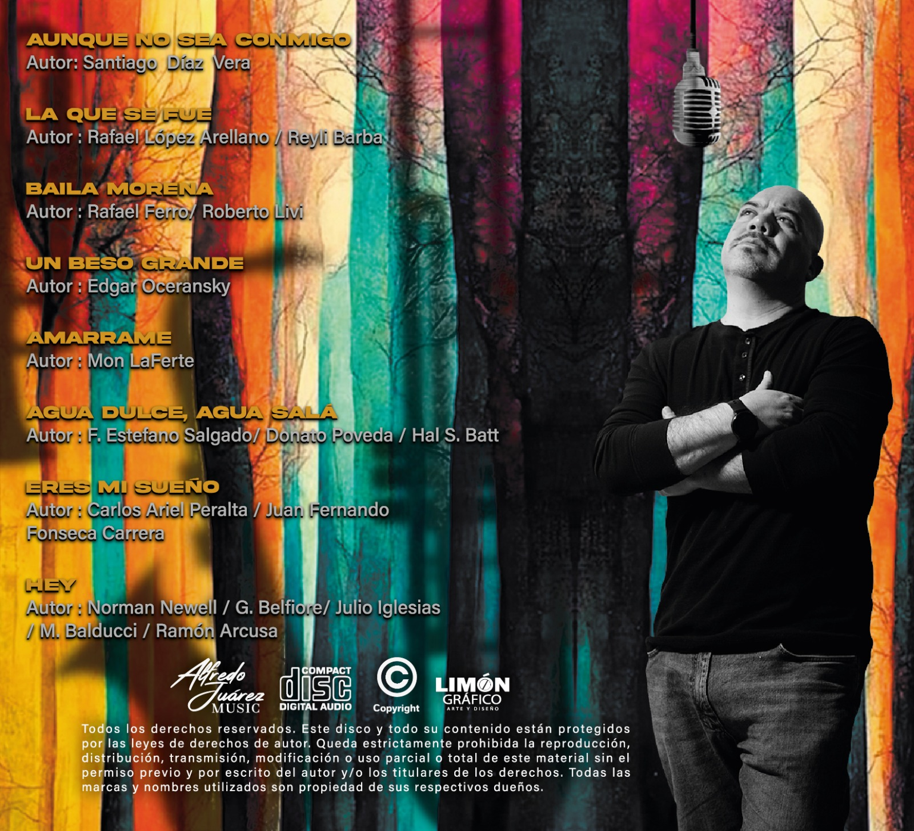
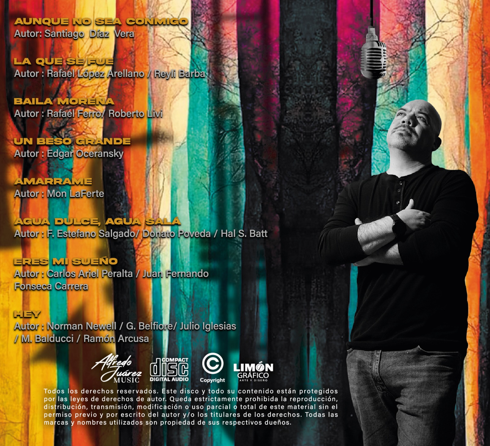

Descubre toda la discografía de Alfredo Juárez
 

Aunque no sea conmigo...
Este álbum reúne una colección de canciones inspiradas en la tierra, el arte y el alma. Cada pieza refleja el estilo único de Alfredo Juárez.
Lista de canciones(DEMO):
- 1. Aunque no sea conmigo
- 2. La que se fue
- 3. Baila morena
- 4. Un beso grande
- 5. Amarrame
- 6. Agua dulce, agua salá
- 7. Eres mi sueño
- 8. Hey


Álbumes Destacados

Primer álbum lanzado en 2010. Una mezcla única de sonidos tradicionales y modernos.